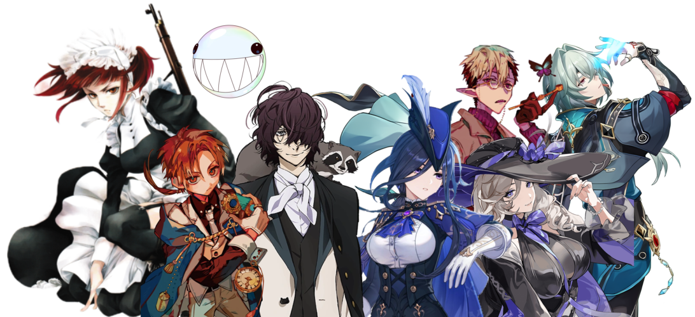

discord: goslaw gmail: m.zych3333@gmail.com proton: gosfox@proton.me ~ ~ ~ click the icons

~ Click acharacter


Socials
discord: goslaw
gmail: m.zych3333@gmail.com
proton: gosfox@proton.me
~ ~ ~ click the icons